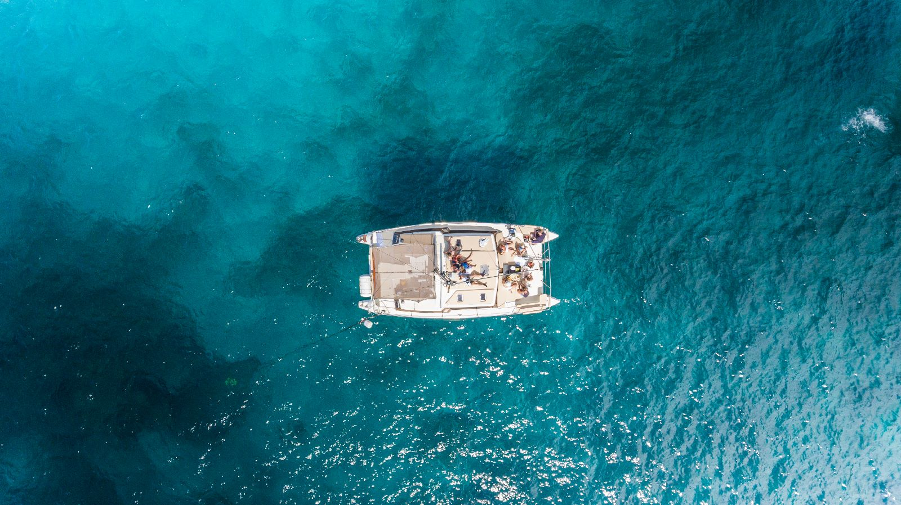
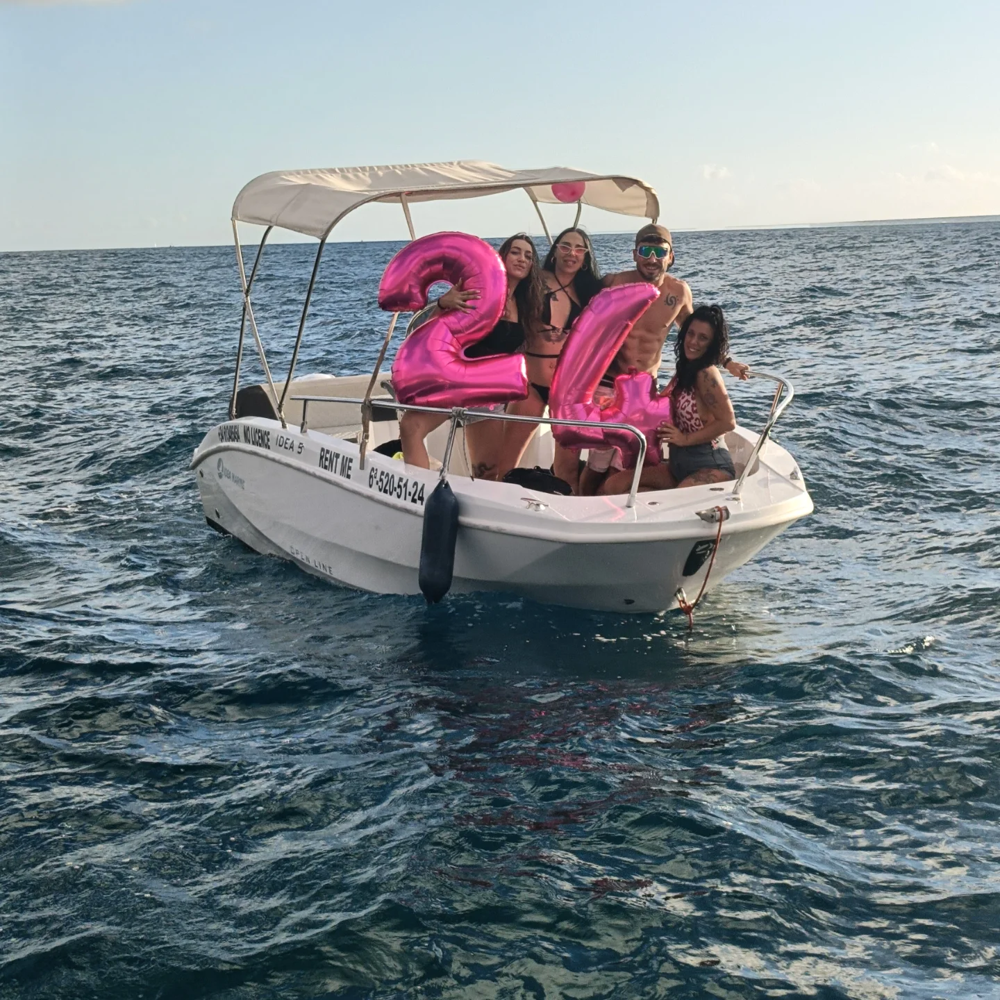

Tenerife dal mare
Scopri Tenerife dal mare con esperienze private e uscite esclusive in barca. Scegli tra charter privato per gruppi, uscite premium al tramonto o esperienze personalizzate con open bar, catering, attività acquatiche e servizio professionale a bordo.
Le opzioni

Yacht Privato
Fino a 12 pax · Fun & Luxury · modelli premium
Giornata privata a bordo: itinerario libero, attività acquatiche, cucina a bordo e skipper certificato. Disponibili più modelli, da Fun Yacht ai charter premium Lady Sunshine, Champagne e Armani.

Catamarano
Gruppi · stabilità · comfort
Navigazione comoda e stabile, perfetta per gruppi e famiglie. Soste bagno, snorkel e relax lungo la costa di Tenerife.

Barco sin piloto
Senza licenza · autonomia · piccoli gruppi
Noleggio di imbarcazione senza patente nautica: guida tu, in autonomia, lungo la costa. Ideale per piccoli gruppi che vogliono libertà sul mare.